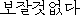
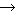

| Korean | English | Japanese | Overlaps | |||||||
3  | ||||||||||
| 2 | ||||||||||
 | 2 | |||||||||
| worthless | | 2 | ||||||||
| valueless |  | 1 | ||||||||
 | trifling | 2 | ||||||||
| beneath notice |  | 1 | ||||||||
| trivial | 1 | |||||||||
| useless | 2 | |||||||||
| 1 | ||||||||||
| 1 | ||||||||||
| 1 | ||||||||||
| 1 | ||||||||||
| 1 | ||||||||||
Any machine translation system requires a transfer dictionary between the source and target languages. Typically, since the construction of such a dictionary is done by hand, a lot of time is taken and the cost is enormous. Considering this, we attempted the construction of a bilingual dictionary through the re-generation of already-existing language resources. Aiming at the generation of a Korean-Japanese dictionary, we extracted candidates of Korean and Japanese equivalent pairs by a two-step process of searching through a Korean-English dictionary first and then searching through an English-Japanese dictionary. We also attempted the narrowing down of Korean-Japanese equivalent pairs by the overlapping of obtained Japanese translations. According to a trial experiment using 100 Korean words randomly taken, 61 correct Japanese translations were obtained. Among the correct translations, we took 25 translations for which a search of the English-Japanese dictionary successfully produced two or more translations for the English words obtained in the search results of the Korean-English dictionary. Of the 25 translations, 21 (84%) could be automatically narrowed down by taking the overlapped words from the Japanese translation sets for the individual English words. With the above two-step dictionary extraction, moreover, nine cases out of ten were correct when only one Japanese translation was obtained. These results show the possibility that Korean-Japanese translation pairs can be generated at an expected correctness rate of 44 out of 100 words when using the already proposed method that combines a Korean-English dictionary and a Japanese-English dictionary.
| 1 Introduction | |
| 2 Conventional Method and Problems | |
| 3 Improved Method | |
| 4 Trial Experiment | |
| 5 Discussions | |
| 6 Conclusion | |
| References |
In the development of a machine translation system, it is necessary to create a bilingual dictionary comprising pairs of the source language (SL) and the target language (TL). However, this requires large costs in terms of labor and time. In particular, when one of the languages is not familiar at all, the following two realistic problems are unavoidable.
Therefore, it is necessary for multi-language translation to discuss achievability under such conditions. In this paper, our focus is on the latter problem.
Even if a bilingual dictionary does not exist between SL and TL, the possibility is high that there is a bilingual dictionary of SL and English and that of TL and English. In other words, the generation of a bilingual dictionary with English playing the role as an intermediary is a highly possible alternative.1 By the effective utilization of existent language resources, we can expect the establishment of methods able to create bilingual dictionaries involving a number of translation pairs.
Tanaka et al. proposed a method to create a bilingual dictionary by a third language[7,8]. In their papers, however, they only went so far as to state the following effect: useful for reconsidering and compensating for the vocabulary of existing dictionaries. Bond et al. improved the method of Tanaka et al. by introducing semantic classes and two third languages, and improved the accuracy of the resulting dictionary[2]. This attempt was valid but depended on the existence of special linguistic resources. On the other hand, GETA CLIPS constructed a multi-language dictionary by combining a number of English translation dictionaries[1,4]. This attempt presupposed work support in dictionary creation by humans.
We also improved the method of Tanaka et al. and attempted the generation of a Korean-Japanese dictionary[5]. However, the extraction rate of translation pairs was only about 20%. Therefore, we investigated how to improve the extraction rate of equivalent pairs by the utilization of language resources, in a manner different from [5]. In the following, assuming English to be the third language, we investigate a method that generates a bilingual dictionary by using a bilingual dictionary of SL to English and a bilingual dictionary of English to TL. Here, we do not use lexical information of either SL or TL. This is to ensure the practicality of the method. In addition, based on the fact that it is not easy to investigate the correctness of outputs, we aim at achieving a method that guarantees the correctness rate of extracted equivalent pairs rather than the extraction rate of the equivalent pairs. As a concrete application, we present a trial experiment of generating a Korean-Japanese dictionary using a Korean-English dictionary and an English-Japanese dictionary.
The method of generating a bilingual dictionary of SL and TL via a third language was first proposed by Tanaka et al.[7,8]. An outline of their method is given below, using the example of generating a Japanese-French dictionary via English. They reported that the approach is "useful for reconsidering and compensating for the vocabulary of existing dictionaries."

EnglishFrench or FrenchEnglish Japanese, place the last translated sets of French words or Japanese words in a "selection area," and judge the results having a lot of common morphemes as being in a bilingual relationship ("two times inverse consultation").We indicate the five problems below ((a) to (e)) when applying the method of Tanaka et al. to the automatic generation of a Korean-Japanese dictionary, since the linguistic nature between Japanese and English largely differs[5].
In addition, we set the four conditions below ((C1) to (C4)) when applying the method to the generation of an unspecified bilingual dictionary.
Conditions for application of the method to an unspecified language pair
As a result of avoiding the use of harmonized dictionaries (thereby preventing the extraction of explanatory expressions), using a Korean-English dictionary and a Japanese-English dictionary, and using the one time inverse consultation of Tanaka et al., we could achieve a translation extraction rate of about 20%[5].
The method of Tanaka et al. using harmonized dictionaries can be thought of as basically focusing on the extraction rate of translations and aiming at achieving a practical method. However, it does not provide a sufficient effectiveness. It is also difficult to say that our previous method using a Korean-English dictionary and a Japanese-English dictionary achieves a sufficient extraction rate. Accordingly, we attempt the generation of a Korean-Japanese dictionary through the utilization of a Korean-English dictionary and an English-Japanese dictionary. In addition, we re-investigate the problem of harmonized dictionaries with the results of [5].
We set the following four conditions based on [5].
Condition (1) is an absolutely necessary condition. Condition (2) may not be considered a necessary condition, but we consider it to be in this investigation since our aim is to apply the method to unfamiliar languages. This condition, we think, greatly improves the practical use of the method. Condition (3) is an optional condition, but the practicality of the method is not lost even if the condition is added since the condition does not depend on the characteristics of SL and TL and since English functions as a de facto common language in human-to-human communications. Condition (4) is a realistic possibility, but it is necessary to discuss the condition separate from conditions (1), (2), and (3), since problems are conceivable in the practicality of the method. We do nothing more than propose conditions (3) and (4) in this paper.
Under the above conditions, we test the following method aiming at the generation of a Korean-Japanese dictionary.
We use the "two times inverse consultation" of Tanaka et al. as a method that forms correspondences between Korean and Japanese words. In other words, we take English sets corresponding to Korean words from a Korean-English dictionary, and take Japanese translation sets from an English-Japanese dictionary for each English word. After that, we test the narrowing down of translation pairs by the extraction of overlapped words in the Japanese translation sets.
We used an online dictionary[9], which "Yahoo! Korea" offers, as our Korean-English dictionary. The size of this dictionary is about 50,000 words. In addition, we used the "Super Anchor Japanese English Dictionary"[10] of Gakken as our English-Japanese dictionary. The size of this dictionary is 65,000 words.
In order to simplify the evaluation, we randomly extracted 100 Korean words from a Korean-Japanese dictionary[6]. We searched the Korean-English dictionary for these 100 words, and then simply took the English words included in the search results. With the Korean-English dictionary we used, the divisions of the word meanings are specified, but we considered top divisions in the current experiment.
The experimental results are shown in Table 1. As a result of the two-step dictionary extraction for the 100 Korean words, the correct Japanese were contained in 61 of them.
| 1st step: K-E Extraction | Success Rate | 62.0% | 62 / 100 |
| (Total of E translations) | ( 225 ) | ||
| 2nd step: E-J Extraction | Success Rate | 100.0% | 62 / 62 |
| (Corresponding E Equivalents) | ( 113 ) | ||
| (Total of J Translations) | ( 1015 ) | ||
| Result: K-J Extraction | Accuracy | 98.4% | 61 / 62 |
| (Correct J Translations) | ( 291 ) | ||
| (Extracted J Translations) | ( 1005 ) | ||
|
|
|||||||||||||||||||
Among the 61 correct cases, there were 25 cases in which the English-Japanese extraction was successful with two words or more among the English words obtained from the results of the Korean-English dictionary extraction. 21 cases among the 25 were correct when we took out the overlapped words (as translation candidates) that appeared the most in the Japanese translation sets obtained from each English word. Figure 1 shows an example.
| ||||||||||||||||||||||||||||||||||||||||||||||||||||||||||||||||||||||||||||||||||||||||||||||||||||||||||||||||||||||||||||||||||||||||||||||||||||||||||||||||||||||||||||||||
Besides these, there were ten cases in which the Japanese translation was extracted as only one word, and nine of them were the correct answers. Figure 2 shows an example.
| ||||||||||||||||||||||||||||||||||||||||||
If we merge these findings, translations can be automatically extracted at an extraction rate of 35% (25+10/100) and a correctness rate of 85.7% (21+9/25+10).
One of our fears was that a lot of explanatory Japanese translations would be extracted since we used an English-Japanese dictionary with the proposed method. However, from the narrowing down process, this did not exceed one case.3 As a reason for this, the following items are conceivable:
When we applied the method in [5] to 100 words (i.e., those in the previous section), the correct Japanese translations were obtained for 24. The contribution in [5] investigated the maximum number of extractable cases since it did not refer to an automatic narrowing down method. Table 2 shows a comparison with the extraction results in this paper. It illustrates no correlation can be recognized between both results. Accordingly, we can expect an increase in the extraction rate of translations up to 44% by using both methods in combination.
| Previous Method[5] | Proposed Method | Total | |||||
| Extracted | Not Extracted | ||||||
| Correct | Erroneous | ||||||
| Extracted | Correct | 10 | 10 | 4 | 24 | ||
| Erroneous | 7 | 7 | 2 | 16 | |||
| Not Extracted | 13 | 14 | 33 | 60 | |||
| Total | 30 | 32 | 38 | 100 | |||
The case of using both methods seems to be very similar to the case of using harmonized dictionaries from the viewpoint of the usage of dictionary infomation. However, a Japanese-English harmonized dictionary, for example, is a dictionary in which all of the translation information included in the Japanese-English dictionary and English-Japanese dictionary are once separated into one-to-one word relationships and then merged. This means both the one-to-n Japanese-English relationships described in the Japanese-English dictionary and the one-to-m English-Japanese relationships described in the English-Japanese dictionary are lost in the harmonized dictionary. We finally insist that an effective strategy is to consider the constraints using the Japanese-English dictionary and English-Japanese dictionary independently. This enables using both one-to-n and one-to-m relationships unlike creating the corresponding harmonized dictionaries, from the standpoint of the possibility of narrowing down translations, and so on.
We investigated an improved approach to the generation of a bilingual dictionary by the use of already-existing dictionaries, aiming at cost reductions in bilingual dictionary generation. We searched through a Korean-English dictionary and an English-Japanese dictionary in this order, aiming at the generation of a Korean-Japanese dictionary, and estimated the Japanese translations corresponding to the Korean by looking at the overlaps of the obtained Japanese translations. According to a trial experiment using 100 Korean words, the correct Japanese translations were obtained for 61 of them. Among the correct translations, we took 25 translations for which a search of the English-Japanese dictionary successfully produced two or more translations for the English words obtained in the search results of the Korean-English dictionary. Of the 25 translations, 21 (84%) could be automatically narrowed down by taking the overlapped words from the Japanese translation sets for the individual English words. With the above two-step dictionary extraction, moreover, nine cases out of ten were correct when only one Japanese translation was obtained.
Next, we considered the combination of the above-mentioned method using the Korean-English dictionary and Japanese-English dictionary with the previous method, and obtained the possibility of generating Korean-Japanese equivalent pairs at an expected correctness rate of 44 words out of 100 by the combined use. In comparison with the case of using harmonized dictionaries, we found this option to be superior from the standpoint that the information of the original bilingual dictionaries could be utilized to the maximum extent possible according to the characteristics of each dictionary.
In the experiment in this paper, we estimated the equivalent relationships of the Korean and Japanese by string agreements using a Korean-English dictionary and an English-Japanese dictionary. In other words, we did not use any linguistic information about Korean or Japanese. Consequently, the proposed method can perhaps be easily utilized when generating a bilingual dictionary of an optional pair using English translation dictionaries.
In the future, we want to improve the accuracy of the proposed method by the introduction of English linguistic information. Because such English information has no influence on the language pair, there is no loss of generality. We also want to investigate the ideal combination with the method in [5]. A further plan is to investigate the applicability of the method to other language pairs.